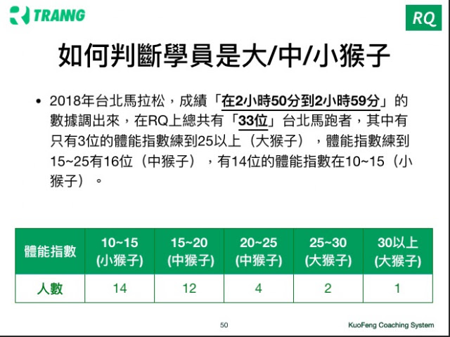

到底該加量到多少才夠？
在《羅曼諾夫博士的姿勢跑法》裡有一章是〈大猴子／小猴子：如何估計你身體的訓練需求》。本章傳達出一個重要的訓練概念：「適合每個人的訓練量是不一樣的？」
作者羅曼諾夫博士在書中提到「從一九二〇年代末期，幾乎整整五十年，在我的祖國俄羅斯，一組科學家團隊對哺乳類動物進行自發性的活動力測試，我認為這個研究的結果具有指標性的意義，讓我們稱它作『大猴子／小猴子』研究。在這份研究中，猴子被放到一個大獸籠中，牠們可以在這個籠子裡四處走動、攀爬和從事各種活動。這些動作所耗費的能量可以被計算和製成圖表，當這些科學家收集每一隻猴子日常的基礎活動量時，他們發現有些猴子跟其他隻猴子比起來顯然更好動。」
- 大猴子運動員：是指活動力較充沛，較為好動；練太少，刺激不夠，需要較大的訓練量才會進步。
- 小猴子運動員：對訓練量的增減較為敏感，加量會很容易進步，但一超過臨界點就會退步，不宜練太多。
所以羅曼諾夫博士在書中強調：「在設計一份訓練計畫時，有必要先瞭解自己到底是隻活動力充沛的猴子、一隻活動力中等的猴子，還是一隻活動力較低的猴子。這跟你的體型沒有關係。一位骨架大、肌肉厚實的運動員，可能天生的活動力就比較低；一位身高中等、身材精瘦的運動員，反而可能是隻精力充沛的大猴子。」（上述文字翻譯自The Running Revolution, P193）
問題在於：「要如何搞清楚自己或學員是哪一種猴子？」換另一種問法：「到底該練多少才夠？」
這回到了科學化訓練的本質，也就是「量化」的問題，我們是否能找到一個明確的「數值區間」來告訴RQ的跑者，你的「跑量」練到這裡就夠了，不建議再加量。該如何明確量化？
最符合上述需求的是RQ中的「體能指數」。
我把去年（2018年）台北馬拉松，成績在2小時50分到2小時59分的數據調出來，在RQ上總共有33位台北馬跑者，其中有只有3位的體能指數練到25以上（大猴子），體能指數練到15~25有16位（中猴子），有14位的體能指數在10~15（小猴子）。所以小猴子的比例比想像的多。如果有練間歇的話，體能指數15的週跑量大約就在45~60公里之間。

同樣是全馬成績在2:50~2:59之間的跑者，體能指數的變化如此之大，這也同時證實了大猴子與小猴子的概念，以及訓練量的確是需要個人化。個人化的方式不是透過成績的高低，而是跟個人天生的能量代謝系統有關，有些人需要練比較多，有些人一練多就會表現不好……所以我想利用個人的訓練數據找出每一位跑者最適合的「體能指數」範圍。
研究方法是用「體能指數」vs 「當前跑力」做圖，試著找出不同跑者的最佳體能指數。我先用其中一位學員的數據來做分析，他是一位61歲的全馬跑者，去年PB3:21，今年PB到3:10，很認真訓練，而且上傳數據的時間有一年半。
圖中是他最近一年的數據分佈圖：

- X軸：「體能指數」
- Y軸：「當前跑力」
- 紅線是我憑感覺畫的趨勢線
他的最佳表現會落在體能指數18.5~19.5之間，再練更多，表現就會開始下降。從上面的界義中，他很明顯是一隻中猴子。
下面這位跑者，是從受傷復原後重新投入訓練的案例。剛開始練，體能上升，跑力也跟著一起提升，但體能指數練到11之後，跑力開始持平，所以很明顯是隻小猴子。
下面是另一位專門練超馬的RQ用戶，他的散佈圖跟前一位長得很像，但他的體能指數在25之前都有很明顯的進步，一直到26之後當前跑力才開始持平。從這個數據看來，他很明顯是隻大猴子，而且對他而言，也更認識自己在下一場超馬比賽前該加量到多少才能有好的表現。（建議加量到體能指數28~29，賽前減量，雖然體能會降，但體能指數就算降到26，都可以維持表現）
下面這一位跑者在最近一年（2018年10月到2019年10月）的數據可以看出，他在體能指數上升到10之前都一直進步（跑力一直提升），體能指數從10練到12期間進步趨緩，我的問題是，體能指數再加量練上去，會再繼續進步嗎？
我把這位RQ跑者的數據擴大成三年（2016年10月到2019年10月），最終的聚佈圖可以得到答案是否定的。他的最佳跑力在當體能指數在10~12之間時，當他的訓練量加到體能指數12之後，運動表現（跑力）是開始走下坡的。


透過RQ此次公開的「當前跑力vs體能指數」散佈圖，可以幫助跑者找到他最適合的體能指數。有次講課之後有學員問「找到之後那該怎麼調整課表？」
找到明確的體能指數之後，等同找到該跑者加量訓練的天花板，該跑者能練的「量」就確認下來了，接下來課表設計的重心就變成「質」，要去思考如何在已經固定的量下面去做訓練品質的（個人化）提升。例如個人化的活動度、力量與技術訓練。
但要使用RQ這個新的分析散佈圖有個前提：
累積數據至少要有半年以上
訓練數據中必須含有心率
相對規律的訓練，有週跑量很大的時期，也有週跑量較少的時期
如果你是RQ的長期用戶，也符合上述三個前提，歡迎運用此次新功能來找到自己個人的最佳體能指數，把它確定下來，就能更專注在訓練品質的提升上面。